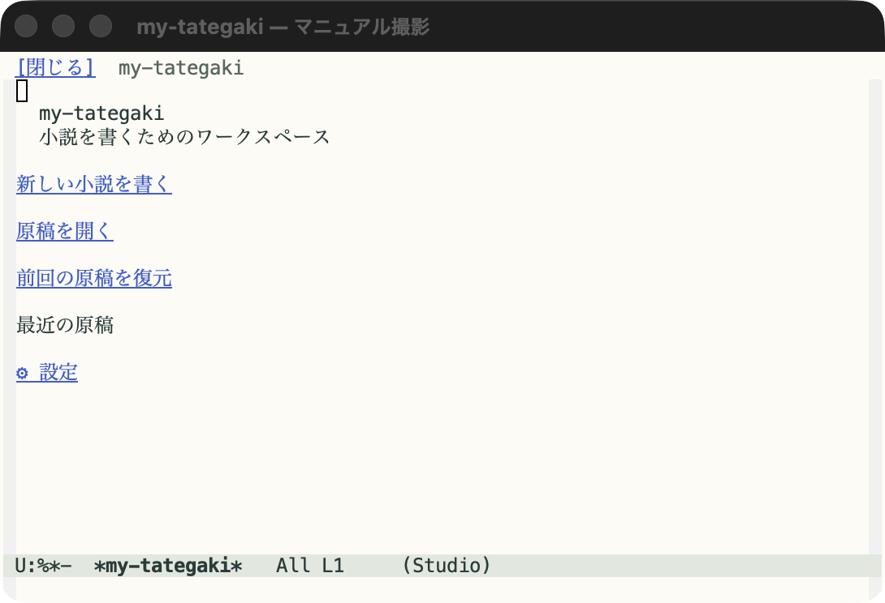
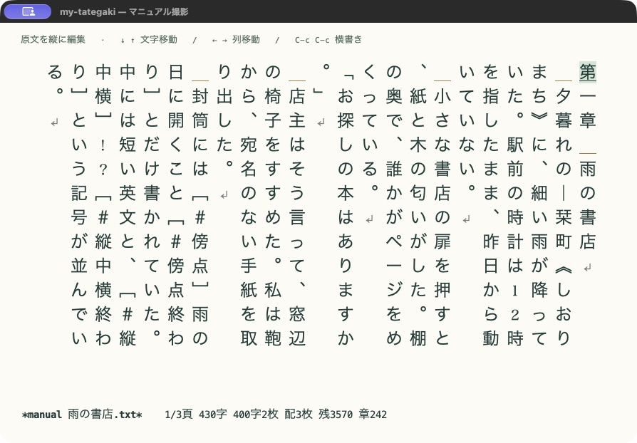
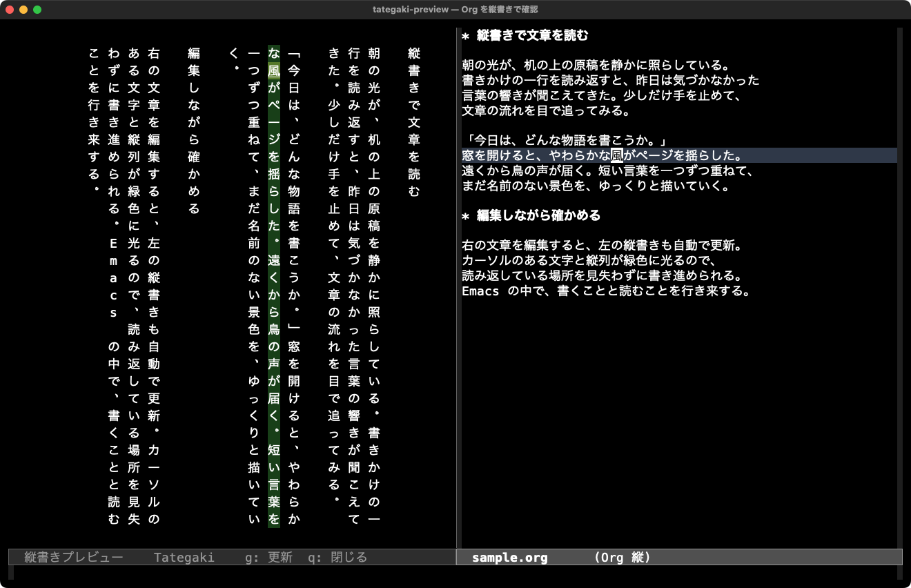

Studioで小説を書き始める
my-tategakiは、Emacsのテキストを縦書きで編集し、その周りに目次・設定・校正・履歴などを開ける執筆環境です。普段使う本文バッファが原稿そのもので、入力・保存・UndoにはEmacsの操作を使います。専用の文書形式へ変換してから書き始める必要はありません。
最初はM-x tategaki-studioから始めてください。執筆するWriteと、ツールを並べるReviewを切り替えられます。Writeでも「目次」を開いておけるので、章を参照しながら書けます。
このページでは導入と最初の保存までを説明します。画面の操作はStudioと設定、本文の移動や日本語入力は編集と入力、ルビと原稿用紙は組版と原稿用紙に進んでください。
準備するもの
- Emacsと、日本語を表示できるフォント。パッケージの必要バージョン宣言はEmacs 27.1以降です。
text-modeまたはその派生モードの原稿。プレーンテキスト、Markdown、Orgなどを使えます。- ルビ・縦中横・欧文回転・固定原稿用紙の描画には、SVG画像を表示できるGUI版Emacs。
基本の編集にAIモデル、Docker、Copilot、Corfuは不要です。必要になったときに、ローカルAIやDockerを使うPDF・EPUB出力を追加します。辞書のLookup、macOSの音読も任意です。
端末やSVG非対応環境では、注記を含む原文を文字として並べる縦書きを使います。主な実画面・入力の検証環境はmacOSのNS版GUI Emacsです。すべてのOS、Emacsビルド、IMEの組合せを検証したわけではありません。環境ごとの確認点は困ったときを参照してください。
読み込みから最初の保存まで
リポジトリを置いたディレクトリをEmacsの設定へ追加します。次のパスは、実際の保存先に置き換えてください。
(add-to-list 'load-path "/path/to/my-tategaki")
(require 'tategaki)設定を読み込んだら、次の順に操作します。M-xはMetaキーを押しながらxを押し、コマンド名を入力してEnterで実行する操作です。MacのMetaキーはEmacsの設定によって異なります。
C-x C-fでmanuscript.txtなどの原稿を開きます。新規の空ファイルでも構いません。M-x tategaki-studioを実行します。テキスト原稿以外から実行した場合は開始画面が開き、そこから新規原稿を作るか、既存の原稿を開けます。- 右から左へ進む縦列に文章を入力します。空の原稿や文末の
□は挿入位置の目印です。 C-x C-sで本文を保存します。Studioの新規原稿は、ここで初めてファイル名を決めます。
fundamental-modeのバッファをそのまま使いたい場合は、先にM-x text-modeを実行します。プログラム用のメジャーモードは対象外です。もともと読み取り専用だったバッファは、縦書きにしても読み取り専用です。


書きやすい画面にする
- ヘッダーの「⚙設定」を開き、フォントと文字サイズを調整します。変更は原稿の表示へ反映されます。保存先と取消の扱いはStudioと設定で説明します。
- ルビや原稿用紙を組版して見たい場合は、本文で
M-x tategaki-typeset-editを実行します。Studioの開始だけでは組版の設定値を変更しません。 - 章を付け、ヘッダーの「目次」または
C-c s oで一覧を開きます。本文に入力フォーカスが残るので、そのまま書き続けられます。 - 推敲時はReviewに切り替えます。校正・履歴・AIなどは「原稿」メニューから開けます。作業後は各ペイン上部の「閉じる」で本文へ戻れます。
# 第一章 出会い
雨が降り始めた。
## 第一節 駅前
「傘を忘れたの？」
# 第二章 再会この見出しは章一覧の例です。目次の折畳みや移動、段落の字下げ、台本形式は執筆支援を参照してください。
本文の保存と、表示の変更を区別する
縦書きは元の本文に表示を重ねる仕組みです。文字サイズ、紙面、目次の開閉を変えても、本文やUndo履歴を書き換えません。一方、ルビ記法の挿入、置換、履歴の復元、差分の採用は本文を編集する操作です。
C-x C-sは原稿ファイルを保存します。設定画面の「保存」は設定を選んだ範囲へ保存する操作です。↵・⇥・□などの表示用記号は、原稿へ付け加えられません。- MarkdownやOrgの記号は、直接編集では原文として残ります。組版が解釈する青空文庫形式の注記は対応記法に限られます。
- 自動履歴は途中経過を残す補助機能です。通常のファイル保存も続けてください。確認と復元は履歴と比較で行います。
Studioを終了するには「原稿」メニューの「Studioを終了」、またはM-x tategaki-studio-modeを使います。縦書き表示はそのまま利用できます。横書きへ戻るには続けてC-c C-c（tategaki-quit）を実行します。本文と現在位置を保ったまま、通常の編集へ戻ります。
表示だけを使いたいとき
Studioを起動せず、縦書き編集だけを使うこともできます。いずれも同じ原稿を編集します。
| 開始コマンド | 用途 | 終了 |
|---|---|---|
M-x tategaki-edit | 現在の設定で縦書き編集。組版の既定値は無効で、原文の文字を表示します。 | C-c C-c |
M-x tategaki-typeset-edit | 組版を有効にして、ルビ・禁則などを見ながら編集します。 | C-c C-c |
M-x tategaki-preview | 横書きの編集画面に、読み取り専用の縦書きを添えます。 | プレビューでq |
tategaki-editは、以前に有効にした組版設定を引き継ぎます。原文の表示へ戻したい場合は組版の切り替えを使ってください。


tategaki-editの直接編集例。原稿の記号を含めて縦に表示します。横書きで編集し、縦書きで読む
横書きの編集画面を残したい場合は、プレビューモジュールを読み込みます。
(require 'org-tategaki-preview)編集する本文でM-x tategaki-previewを実行すると、左側にプレビューが開き、フォーカスは編集側に残ります。別フレームならM-x tategaki-preview-frameです。再実行時は既存の表示を再利用します。


| したいこと | 操作 |
|---|---|
| 内容を反映する | 編集を止めて約0.2秒後に自動更新。手動ならプレビューでg、またはM-x tategaki-preview-refresh。 |
| 現在位置を追う | 編集側の位置を強調し、画面外なら自動で横へ送ります。 |
| 横に読み進める | プレビューでC-x <は左、C-x >は右。本文の位置を動かすと自動追従へ戻ります。 |
| 閉じる | プレビューでq、またはM-x tategaki-preview-close。別フレームはフレームごと閉じられます。 |
直接編集との違い
プレビューは単一改行を連結し、空行を空の列として残します。Orgでは見出し先頭の*を除いて独立した段落にします。Org以外の記号やMarkdown装飾は解釈しません。narrowing中でも原稿全体を使います。
同期は本文からプレビューへの一方向です。プレビューでの本文編集や、クリックによる本文への位置指定には使えません。ルビ、禁則、縦中横、欧文回転、書記素をまとめる表示、固定ページの切替も対象外です。これらが必要なら、組版した直接編集を使ってください。編集・リサイズ時には全文を変換するため、長文では待ち時間が生じます。
プレビューだけの設定
(setq org-tategaki-preview-refresh-delay 0.2
org-tategaki-preview-column-spacing 1
org-tategaki-preview-window-margin 2
org-tategaki-preview-padding 1
org-tategaki-preview-vertical-padding 1)
;; 自動追従を止めて手動で読む場合
;; (setq org-tategaki-preview-sync-point nil)左右の余白は半角セル、上下の余白は文字の高さを単位とします。変更後はgで更新してください。約物の縦書き用字形が欠ける場合はorg-tategaki-preview-use-vertical-formsをnilにできます。これらは直接編集用の設定とは別です。従来のorg-tategaki-previewというコマンド名も使えます。